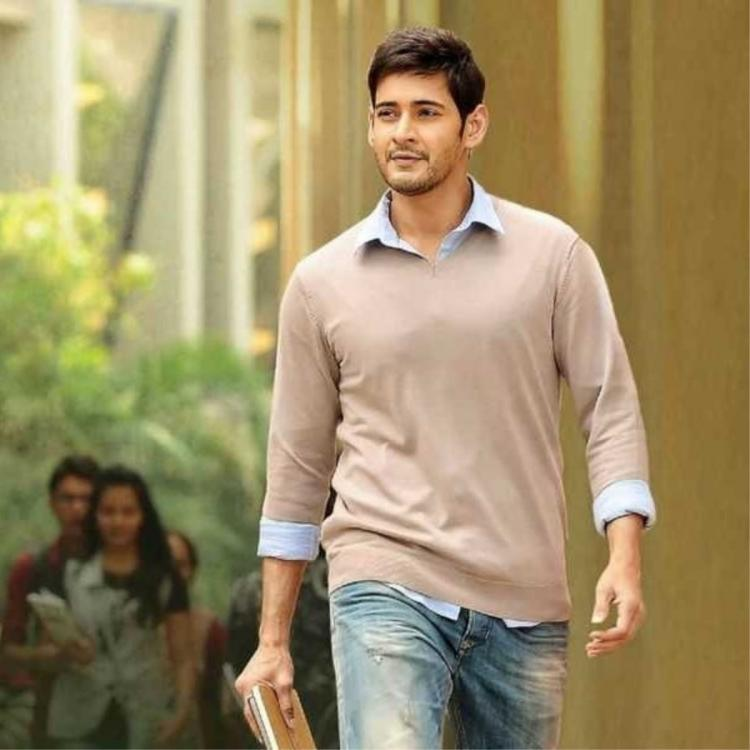

In my school life, I was an average student.I used to participate in many competions like Elocution,Essay writing and win prizes. I had a limited number of close friends.Daily I used to wake up at 6:30am and my dad will drop me at 7:55am and the classes will run as usual. I will return home by 6:00pm.I will take rest for some time.I will do my work and I will go to bed by 10:00pm.I used to hang out with my friends at times.I feel school life is the best.I really miss my school friends a lot
It's been 1 year since I joined my college. When I initially joined my hostel I was little afraid and then I manged to overcome with it.College life is totally different from that of the School Life.In College life, I do all my works.I believe that college has made me little independent.Hostel Life has learnt me how to behave in the society and how to make friends.I also gained leadership qualities in college.I am the representative for our batch.I also have many friends compared to my school life.Unlike school days,there is no spoon feeding in college.I got wonderful friends in my college.
This is a collage of pics of my college friendsClick on thr image to know about my favourite actor
